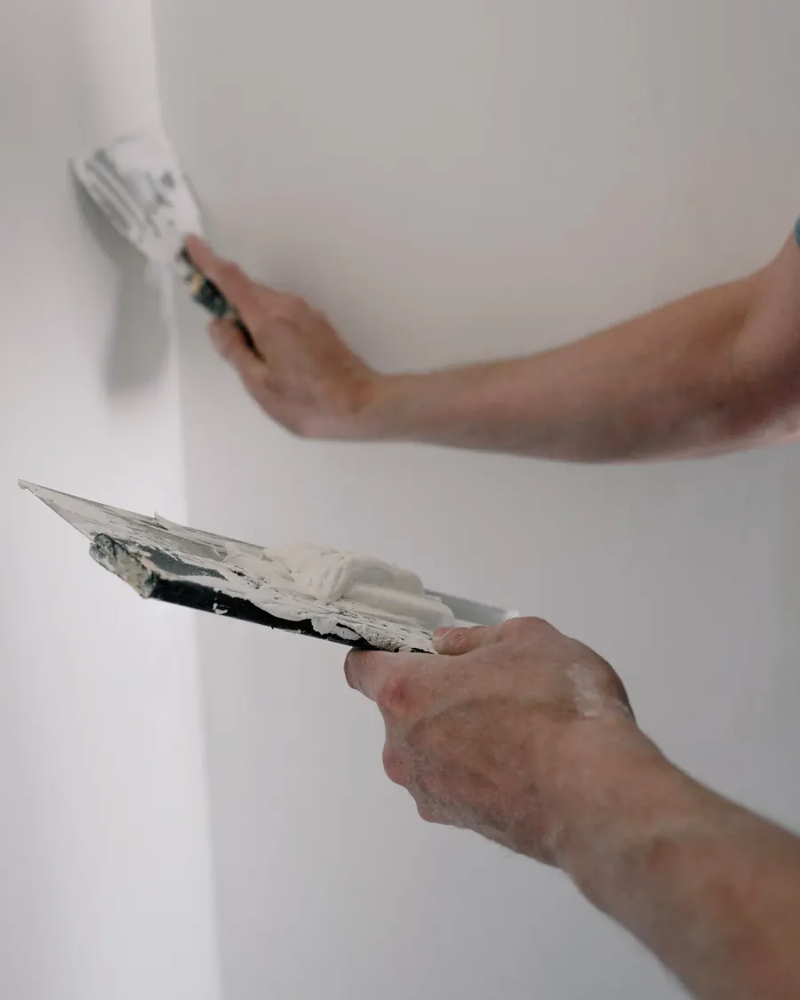

01
Siseviimistlus
Pahteldatud, plaaditud ja värvitud
Pahteldamine
Täidame praod ja ebatasasused ning teeme seinast sileda aluse värvile või tapeedile.
Plaatimistööd
Vannitoad, köögid ja muud ruumid: paigaldame plaadid täpselt mõõtude ja mustri järgi.
Värvimine
Ühtlane katvus ja õiged toonid, olgu tegemist ühe toa või terve hoonega.